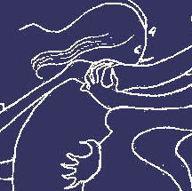

The Later Years
According to Adelyn Breeskin, the 1971 curator of Contemporary Art at the National Collection of Fine Arts, Brooks participated in three important exhibitions in 1925. She displayed her paintings at the Galerie Jean Charpentier in Paris, then at the Alpine Club Gallery in London. The third show was at the Wildenstein Galleries in New York, her first exhibition in the United States. Breeskin asserts that it was after seeing the accumulation of her artistic career in these shows that Brooks, "withdrew into her shell and began to concentrate entirely on her drawings."1 The result was over two hundred drawings, many of which were autobiographical but others were created for general exhibition. In 1931 Galerie Théodore Briant in Paris held an exhibition of 101 of her drawings. Later in 1935 fifty of the drawings went on display at the Arts Club of Chicago. In the thirty-seven drawings that survive within the National Collection, she revisits the themes expressed in the drawings of her early childhood and refines her contour technique through "linear fantasies."2
Drawings from the Later Years

{kind=link}
{kind=link}
{kind=link}

Mummy (c.1930)

The Impeders (before 1931)
{kind=link}
{kind=link}
{kind=link}

It was at this exact same time that Romaine began work on her memoirs. The same themes seen in her imagery dominate the pages of this autobiographical work. One of the most reoccurring themes is that of her brother. She describes his obsession with playing the piano in great detail. Her memoirs emphasize the fact that every time her brother wanted to play her mother would force her to listen because she "viewed St. Mar’s preoccupation as a manifestation of genius." 3
In an image titled Finger Exercises (c.1925-35; slideshow above) St. Mar is depicted hunched over the piano pounding incessantly on the keys. In her memoirs Brooks describes the scene:"the din of fifty madhouses could not have competed with the deafening sounds which he now drew from the piano. Between long strands of hair was visible the small red neck, working up and down, piston-like within the large coat collar. On and on he would play…At last, like a deflated accordion, he would collapse to his former limp self and remain quietly on the stool until we had left the room" 4
"No Pleasant Memories"
Quotes from the unpublished memoirs of Romaine Brooks
Chastain goes on to elaborate on this image by concluding that the phallic shape of the stool upon which St. Mar plays is an allusion to his "adolescent inappropriate sexual behavior."5 Her argument is bolstered by the following reference to his behavior in Secrest’s biography writing, "As he grew older, the overtones became sexual, menacing, and obscene. Romaine did not elaborate, but certainly this first contact with adult male sexuality must have been frightening."6 This may be an accurate interpretation, but this is the only image out of the entire collection of drawings that addresses this issue.
In another more pleasant image Brooks depicts St. Mar playing for a herald of angels. The work is titled What the Saint Heard and Saw (before 1931; above slideshow) and illustrates yet another example of Brooks' imagination depicting otherworldly beings. According to Secrest, "St. Mar was convinced God and His saints were persecuting him 'like demons,' and he saw similar demons all around him."7 Brooks uses this image to illustrate the demons that haunted her brother along with those that haunted her.
With reference to images of her relationship with her mother, the image St. Mar placed himself between me and the whip facing my mother (c. 1930; slideshow above) stands out. Supposedly Ella had an obsession with the spirit world and regularly held séances with the help of a medium. In this particular instance Ella suspected her daughter was spying on the proceedings and readied herself to chastise the child when her son intervened. In the image Romaine depicts herself as the smallest of the three figures and trapped between the two. The maternal figure holds a whip at the ready while St. Mar’s figure steps forward defiantly. This image is also a pictorial representation of an overwhelming feeling of entrapment Brooks frequently mentions in her memoirs:
"I was completely wedged in between these two, a small prisoner who knew that no help could come from without- and my childhood was passed in humoring and appeasing their fearful and irresponsible moods. Why from the first I was not crushed between them remains a mystery.” 8
This constant feeling of imprisonment is reflected in the relatively uninterrupted quality of her contour lines. Her most literal illustration of this theme can be seen in, Mummy (c. 1930;above slideshow) where a demon wraps a small female figure from head to toe in what appears to be the same gauze like material used on mummies. The girl’s eyes are enlarged with fear and bore into the viewer as if pleading with us to save her from her captor.
When Brooks deviates from literal illustrations of her life and allows her imagination to take over her demons become stronger and more predominant in her imagery. In Caught (before 1931; above slideshow) once again we see a diminutive female figure representing Brooks being clawed from all sides by fantastical demons and creatures. According to Chastain, the intertwined figures and continuous lines further emphasize Brook’s "inability to leave her childhood memories behind."9 In her exhibition catalog for The Arts Club of Chicago Brooks carefully described this collection of drawings:
"They evolve from the subconscious. Without premeditation they aspire to a maximum of expression with a minimum of means. Whether inspired by laughter, philosophy, sadness or death these introspective patterns are each imprisoned within the inevitable encircling line.”10
The reoccurring imagery depicting desperation, loneliness, and entrapment is evidence that the irregularities of her brother’s behavior and the fear of her mother’s wrath penetrated her inner being, all the way to her core and finally, her subconscious.
In a work titled The Impeders (before 1931; above slideshow) the battle continues, but this time a winged horse protects the small female figure from the grasp of her two demons. Brooks’ brother St. Mar died of kidney failure in 1901 and her mother died of diabetes (or a broken heart) shortly afterwards. These images show the enduringly haunting affect these two individuals had on her life, even thirty years after they had left this world. One critic commented on these works by adding, "They are messages which come from the depths of her nights."11 Accompanying these dark images, it is no surprise that Brooks developed a preoccupation with liberation. Her drawings became a channel within which she could free herself of her ghosts.
In her drawing titled The Past (before 1931;above slideshow) a more mature female figure sits on a suitcase beside an abstract boat. Waves ripple in the background alluding to the sea and the beginning of a journey. Brooks personally described this image in an interview saying, "She is ready, she looks at the past and goes one does not know where; she is intent at the side of the boat. The departure is the beginning of another life." 12
In a more imaginative representation of liberation the image titled Climbing One’s Wings (c. 1930; above slideshow) depicts a winged creature extending its wings in flight. As a more abstract image, the determined expression on the figure’s face and its immense wingspan suggests it will fly directly off the page. A similar wing of salvation is also repeated in the monogram Brooks used to sign her works. Often compared to Whistler’s butterfly monogram, hers depicts a small wing held down by a rope or a chain, forming the letter "R" for Romaine (above slideshow). According to Chastain, the signature is her, "consummate statement about the inhibiting role of her past life." It can be found on the majority of the contour works in the National collection, and serves as a constant reminder that liberation was the ultimate goal in Romaine’s life.
Footnotes
Adelyn D.Breeskin. Romaine Brooks: Thief of Souls. Washington, D.C.: Published for the National Collection of Fine Arts by the Smithsonian Institution Press (1971): 26. ↑
Breeskin, Romaine Brooks, 43.↑
Catherine McNickle Chastain. “Romaine Brooks: A New Looks at Her Drawings.” Woman’s Art Journal Vol. 17 No. 2 (Autumn, 1996- Winter, 1997): 11.↑
Brooks, No Pleasant Memories, 53.↑
Chastain. “A New Looks at Her Drawings.” 11.↑
Secrest. Between Me and Life. 30.↑
Secrest. Between Me and Life. 30.↑
Secrest. Brooks, No Pleasant Memories, 47.↑
Chastain. “A New Looks at Her Drawings.” 13.↑
Breeskin. Romaine Brooks. 38. Originally written in Catalog of an Exhibition of Original Drawings by Romaine Brooks (Chicago: The Arts Club of Chicago, 1935).↑
Breeskin. Romaine Brooks. 39. Originally written by Edouard MacAvoy in “Romaine Brooks,” Bizarre (Paris, March 1968), p.8.↑
Chastain. “A New Looks at Her Drawings.” 14.↑